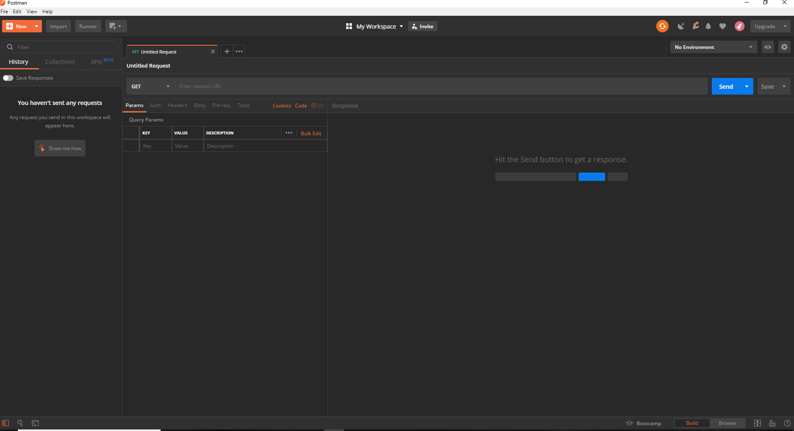

Postman is a Graphical User Interface (GUI) REST Client. GUI Rest clients are important because they simplify the processes associated with making requests in an API environment.
GUI REST clients, like Postman, give you a visually-based organizational system for making requests to API databases and analyzing responses. Typically, they also include many other convenient features, like the ability to save requests and responses that you have made to different API databases.
GUI clients also allow you to quickly request endpoints using various methods without having to know any specific code or syntax, which is necessary when using command-line based clients like cURL.
Postman is free to download and has versions available for both PC and Mac platforms. Another important feature that Postman offers is that it is friendly with cURL. All of the examples covered in the getting started section will be demonstrated in Postman. You can download your free copy directly from the publisher via their website GetPostman.com.

cURL is a command line tool which can be used to make requests and analyze responses from API databases. Being that cURL is not a GUI client, it can be a little intimidating for beginners. Also, because some API responses can be dense with information, cURL isn't always the ideal tool for advanced developers either. Despite these short comings, cURL has become an industry standard for API documentation. There are many reasons for this, but most importantly, cURL syntax is simple, and the program can run on nearly any computing platform.